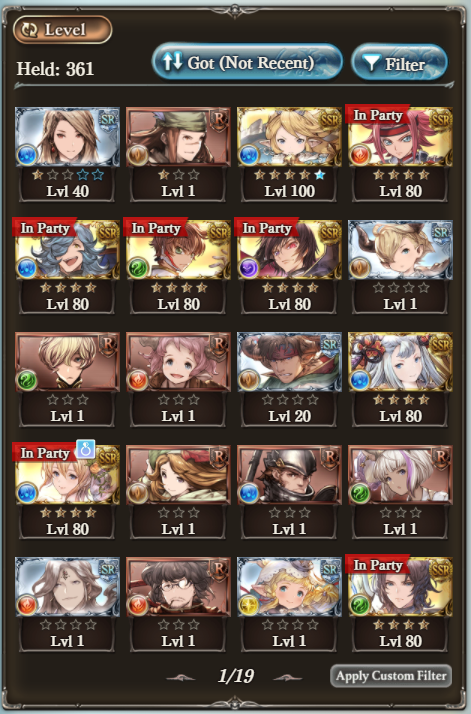

About Me (and Granblue)
What is Granblue?
Granblue Fantasy is a gacha JRPG created by Cygames. You can try it right now by clicking here! While there is not official release outside Japan, it has full English language support.
Why did I start playing Granblue?
Got baited by the Code Geass collaboration event.
Why main Water?
I didn't choose Water, Water chose me. Besides the guaranteed characters and Code Geass characters, Drang was my very first character. Everything just happened after that.
Click here to see the screenshot of this!
About This Site
Five Year Plan
This page details my first big grind in Granblue, where I farmed an item known as the "Tyros Zither"
Click here to learn more about my Five Year Plan!Damage Progression
This page details my team's strength/total damage in my time playing Granblue.
Click here to see my Damage Progression!Achievements
This page details special things I've done in Granblue that I thought deserve recognition.
Click here to see my Achievements!